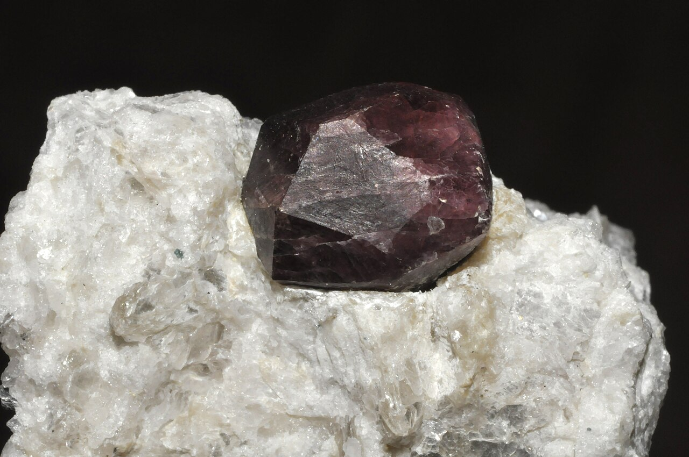

Phengites
Phengites is a hard, white, translucent stone associated with Cappadocia and the power to admit light through closed buildings. ¹ A source tradition identifies Specularis, also called Mirrorstone, with Phengites or Fongites; ² their other accounts describe glass-like sheets, three colored forms, and a red kind that eases bodily aches and anger when carried in the left hand. ³
Generic
Description
Phengites is hard, white, and translucent like marble. ¹ ³ Fingites is described as white and hard as marble, yet transparent like alabaster, and is brought from Cappadocia. ³ A king is said to have built a windowless temple of this stone, whose transparency allowed those outside to see within as though the temple stood open.
Variants
| Kind | Appearance and place | Use or distinguishing property |
|---|---|---|
| Cappadocian white Phengites (Fingites) | Hard, white, translucent; from Cappadocia. | Makes a windowless temple bright enough to see inside. ¹ ³ |
| Clear Specularis (Mirrorstone) | Transparent like glass; found near Segovia in Spain, in Teutonia, and with gypsum in France. | Quarried and split into thin sheets for windows. ¹ ² |
| Black Specularis | Black as ink. | No separate use stated. ² |
| Yellow Specularis (orpiment or arsenic) | Yellow. | More valuable and noble than the other forms. ² |
| Fongites | Some call it a burning gem; others say it is crystalline with a flame-like interior. It is found in Persia. | The red kind has a distinct virtue; ³ see the subtype below. |
Subtype I: Cappadocian White Phengites (Fingites)
This hard, white stone is translucent like marble and transparent like alabaster. ¹ ³ It comes from Cappadocia. One account says that a king built a windowless temple of this stone, whose transparency made the interior visible from outside.
Subtype II: Clear Specularis (Mirrorstone)
This form is transparent like glass. ¹ ² It is found near Segovia or Segorbe in Spain, in Teutonia, and with gypsum in France. ² It is quarried and split into thin sheets for windows. ²
Subtype III: Black Specularis
This form is black as ink. ² No separate use is stated.
Subtype IV: Yellow Specularis (Orpiment or Arsenic)
This form is yellow and is considered more valuable and noble than the other forms. ²
Properties
Specularis is quarried and split into sheets as thin as desired. ² It is used for windows like glass, but light pieces of fir wood serve in place of lead. ² One account says it is translucent like glass and was discovered near Segorbe in Spain. ¹ One account names Segovia, Teutonia, and France, and says the stone found with gypsum in France seems to be its purest form. ²
Subtype V: Fongites
Image

The image shows Grenat pyrope.jpg (source).

Description
Fongites is a Persian stone; ³ some call it a burning gem, while others describe it as crystalline with a flame-like interior. ³ Its red kind is described below. ³
Red Kind: Appearance
Red. ³
Red Kind: Found in
Fongites is found in Persia. ³
Red Kind: Powers
Carried in the left hand, red Fongites removes bodily aches and calms anger. ³
Sources
1. St. Isidore of Seville — Etymologies, Book XVI, IV.23 and IV.37
Open the Phengites passage · Open the transparent-stone passage
Phengites is a Cappadocian stone, hard like marble, white and translucent. A temple was once built out of it by a certain king; it had golden doors and when they were closed it was as bright as day inside.
Transparent stone (specularis, i.e. used for windows) is so named because it is translucent like glass. It was first discovered in the nearer part of Spain, around the city of Segorbe. It is found underground and is cut once it is dug out, and split into as fine a sheet as you like.
2. St. Albertus Magnus — The Book of Minerals, Tractate II, “Specularis”
Specularis (mirrorstone) is so called because it is transparent like glass. It is said to have been found first near the city of Segovia in Spain. I myself have seen it found in such quantities that carts were filled with it, in various parts of Teutonia. I have also seen it found in France along with gypsum: for it seems to be the purest form of gypsum. It is quarried and split into pieces as thin as desired, and windows are made of it, just as of glass, except that, in place of the leads, light pieces of fir wood should be used. There seem to be three varieties of this: one is clear as glass; and another as black as ink; and the third is yellow, which they call auripigmentum (orpiment) or arsenicum, as we have said above; and this is more valuable and noble.
3. Camillo Leonardi — Speculum Lapidum, “Fingites,” “Fongites,” and “Specularis”
Open Fingites · Open Fongites · Open the identity statement
Fingites is white colored, hard as marble, and transparent like alabaster. It is imported from Cappadocia. They say that a king made a temple without windows with this stone, and because of its transparency it was possible to see inside, as if it were wide open.
Fongites is a stone on whose color learned men have doubts. I believe that this is because there are a variety of them. Some say that it is like a burning gem. Others say that it is of a crystalline color and its insides are like a flame. It is found in Persia. Not many know of its virtue. But Evax tells us that if anyone carries red fongites in his left hand, it removes bodily aches and calms anger.
Specularis is the same as Phengites [Fongites].